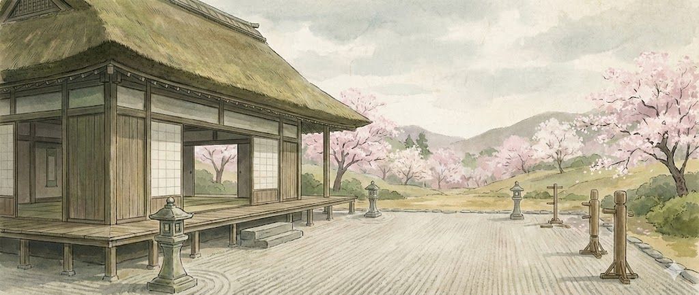
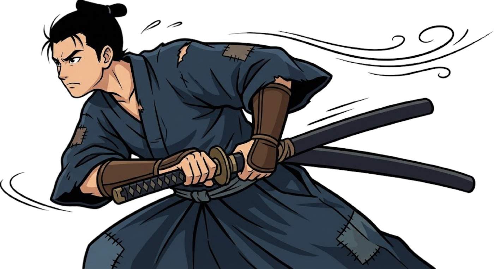

🔊

BUSHIDO
L'ASCENS DEL SAMURAI
武士
Torneig dels Sis Sons.
Derrota els mestres de cada època per convertir-te en Capità.
DOJO
❤️❤️❤️

Pregunta...
HAS CAIGUT!
L'honor es recupera amb persistència.
Speaker Name
...